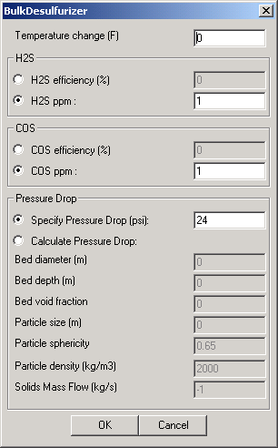
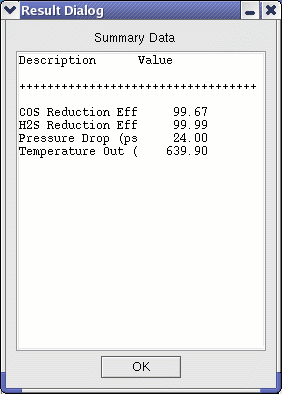

The Bulk Desulfurizer module is a part of the warm (hot) gas cleanup unit designed for bulk removal of sulfur species from the gas stream. The primary sulfur species of concern are H2S and COS, and the unit is designed to achieve exit concentrations of about 10 ppm H2S and 1 ppm COS. Sulfur species must be removed because of emissions requirements and adverse interactions in downstream equipment such as poisoning of fuel cells and other catalytic units.
The Bulk Desulfurizer is based on a transport reactor that has been demonstrated for high temperature operation. The reactor consists of a recirculating system in which the syngas flows co-currently with sorbent in a riser section. A cyclone separates the cleaned syngas from the sorbent and the sorbent falls through a return leg, at the bottom of which it contacts incoming dirty syngas. A portion of the sorbent is removed in a return leg and sent to a regeneration riser. Off-gas from regeneration is processed to produce elemental sulfur or sulfuric acid using conventional technology. Regenerated sorbent is injected back into the riser section of the desulfurization reactor. The Bulk Desulfurizer is intended to be placed downstream of the Chlorine Guard Bed, and upstream of the Sulfur Polisher. A heat exchanger may be required upstream of the unit to achieve the desired operating temperature (~672 K for warm gas operation). The module is assumed to be of use in both hot and warm gas cleanup systems, provided a suitable sorbent is used.
The Bulk Desulfurizer module acts as a component separator. The user provides either a removal efficiency or an exit concentration for COS and H2S. A temperature change can be specified to account for heat effects. Pressure drop across the unit can be specified or computed using specific module configuration details as shown in the User Interface (see below). The pressure drop is based on the Ergun equation and includes terms to account for the static head pressure drop (pressure lost in suspending the solid particles,) and the wall friction. The computed pressure drop option requires the bed diameter, depth, void fraction, nominal particle size, particle sphericity, particle density, and solids mass flow. The unit outputs are the exit gas state: temperature, pressure, and composition.
|  | This user interface first allows the user to specify the change in temperature of the gas through the module--thereby accounting for heat effects. Positive values represent an increase of temperature in the gas between inlet and outlet ports. (Note that the temperature change is measured in degrees Fahrenheit) H2S and COS removal calculations can be made either by specifying the desired removal efficiencies or by specifying the desired exit concentrations. Pressure drop across the module can either be specified (in psi) or computed within the module. If the exit concentration is specified, the value should be below that of the inlet. The calculated pressure drop is based on the Ergun equation, with terms to account for the static head pressure drop (pressure lost in suspending the solid particles,) and the wall friction. Void fraction is defined as 1 - sorbent volume / bed volume. The particle size can be computed as the diameter of a sphere of the same volume as the particle. The sphericity is the surface area of the sphere described above divided by the actual particle surface area. Default values are provided for temperature drop, exit acid gas concentrations, specified pressure drop, and particle density and sphericity (for the computed pressure drop option). |
|  | After the module has executed, the Summary Data button provides summary information. The module outputs the reduction/removal efficiencies for both COS and H2S, the pressure drop across the module (in psi), and the temperature of the exiting gas stream (in Kelvin). |